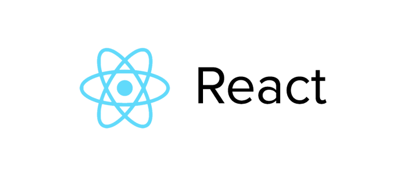

ReactJS是Facebook推出的framework, 再搭配FLUX的架構下讓FB網頁上面更新資料的快速性與開發架構得到的顯著改善，也因此讓大家開始想去了解它的魅力。

ReactJS Introduciton
這邊用官網的三段特色描述來簡單介紹：
VIRTUAL DOM
React abstracts away the DOM from you, giving a simpler programming model and better performance. React can also render on the server using Node, and it can power native apps using React Native.
DATA FLOW
React implements one-way reactive data flow which reduces boilerplate and is easier to reason about than traditional data binding.
JUST THE UI
Lots of people use React as the V in MVC. Since React makes no assumptions about the rest of your technology stack, it’s easy to try it out on a small feature in an existing project.
以往我們所知用更改一個DOM的Element來呈現畫面改變的這個方法在大型頻繁更新的網站上面是非常可怕的效能瓶頸。可以看到的是ReactJS要解決的是Web開發上面UI呈現的問題，隨者網頁功能越多與越多人互相使用與交流，FB遇到越來越多需要在同一個頁面即時更新的情況，ReactJS就是因此而誕生的一個Framework．
而呼應FLUX架構，ReactJS用更簡單的流程來管理頁面的更新，透過事件的訂閱與註冊的概念產生單一方向的處理流程，簡化如MVC, MVVM等架構對於View方面雙向溝通的方式。而也因為是針對UI(View)處理所產生的framework，所以要結合回去你原本的AngularJS這種MVC框架也是可行的。
AKA V in MVC
React : Rethinking Best Practices. 這是我覺得對於ReactJS還不錯的一個解釋
- React 的設計 - 每個更新UI(View)等同於整個畫面重新繪製
- React 的實作 - Virtual DOM與Event
其中第4-6頁的簡單幾句話已經明確說明它的定位。
使用ReactJS
可以到官方網站透過React starter kit取得最新的範例跟JS檔案或是參考官方CDN
如果有安裝Nodejs也可以透過使用官方的工具幫你建置開發環境
$ npm install -g react-tools
如果你在使用上有需要用任何Add-ons，則使用下面的方式引入你的專案
var React = require('react/addons'); instead.
當然你也可以用Bower統一下載
$ bower install --save react
這邊我們就直接用JSBin帶大家一起說聲Hello world
Hello world
很簡單的只要在HTML頁面放好一個div tag,並透過React render出所需要呈現的畫面裡面有什麼(這邊製作了一個div的Element並在裡面放入文字)，並讓這個建置他的物件本身的Name的屬性可以被傳入內部配合處理。
JSX and Hello world with JSX Syntax
JSX
在已經習慣寫XML的情況下要我們產生一個div物件很簡單，但在剛剛說Hello world的時候我們怎麼知道要怎麼產生出一個div物件呢？
React為了讓開發方便就同時提出了一個JSX syntax的方式，接下來我們直接看看JSX的話會長什麼樣子吧
var HelloMessage = React.createClass({
render: function() {
return <div>Hello {this.props.name}</div>;
}
});
React.render(<HelloMessage name="Blackie" />, mountNode);
有沒有覺得很熟悉很簡單了，透過JSX我們可以快速地進行開發
Hello world with JSX Syntax
因為如果使用一般的JS Bin會出現下面的錯誤

這邊為了做出JSX可以在JS Bin上面執行的結果使用了6to5 JS Bin
可以看到如果使用JSX的話記得要加上
<script src="xxxx/JSXTransformer.js"></script>
這行的作用，主要就是去讓JSXTransformer.js查詢並針對所有的script type為text/jsx的內容作轉換。
在開發的時候我們可以透過JSX幫我快速地寫出我們想要的畫面，但因為JSX是一種結合XML語法的pre-compile結果，所以如果是要正式發佈的話還是轉換成純Javascript的內容，這樣才可以使render產生畫面的速度加快。
結語
看完介紹與簡單實作，總結一下為什麼想用Reactjs
- 單一流程
- 簡化以往對於UI(View)更新的方向，捨棄資料綁定的概念，改用重繪的架構，確保每個資料都能夠更新並顯示。這使得發生問題或新增修改功能時會更加快速上手
- Virtual DOM
- 比操作DOM來說效能更好的解決方法，能在大量且頻繁的更新情況下，更快速的反應畫面異動結果
- 強化Component概念
- 強化小模組單一功能的component。這除了縮小每個功能的開發範圍與可重複利用重組任意
Component，也讓測試可以被執行也應該要以測試為前提進行開發(TDD)
- 強化小模組單一功能的component。這除了縮小每個功能的開發範圍與可重複利用重組任意
下一次會用簡單的Demo解說React如何使用FLUX這個架構，有興趣先了解FLUX的流程可以先參考另外一篇FLUX Introduction